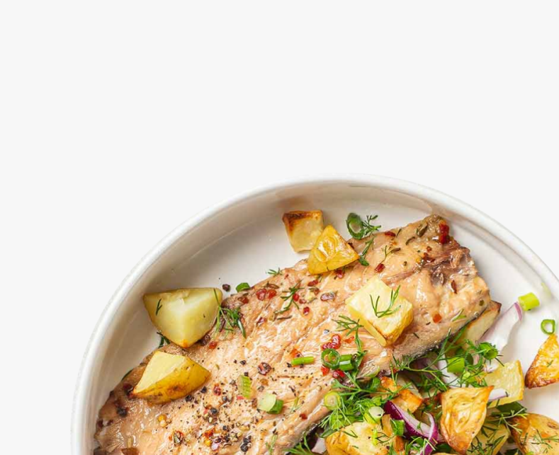
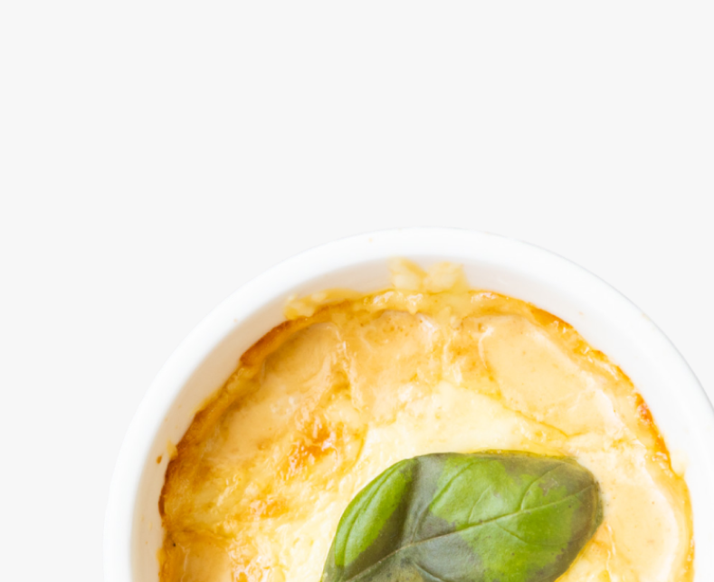
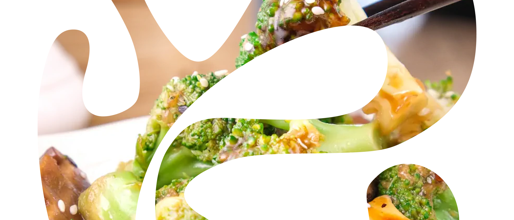

Cтатьи
Памятки
Рецепты
Грибвики
Тесты
Все рецепты
Запечённые
Жареные
Варёные
Копчёные
Тушёные
ГРИБНОЙ ОТВАР
Варёное
Жареное
4 ПОРЦИИ
1 час
Феттучини
Жареное
4 ПОРЦИИ
30 минут
палента
Жареное
Варёное
4 ПОРЦИИ
40 минут
жареные шампиньоны
Выбор пользователей
Жареное
4 ПОРЦИИ
20 минут
Хумус
варёное
4 ПОРЦИИ
40 минут

скумбриЯ
Копчёное
4 ПОРЦИИ
40 минут
лазанья
Запечённое
Варёное
6-8 ПОРЦИй
1 час

Жульен
Запечённое
4 ПОРЦИИ
1 час
голубцы
Тушёное
4 ПОРЦИИ
1,5 часа
овощное рагу
Тушёное
4 ПОРЦИИ
40 минут

китайские брокколи
Выбор пользователей
Жареное
4 ПОРЦИИ
20 минут